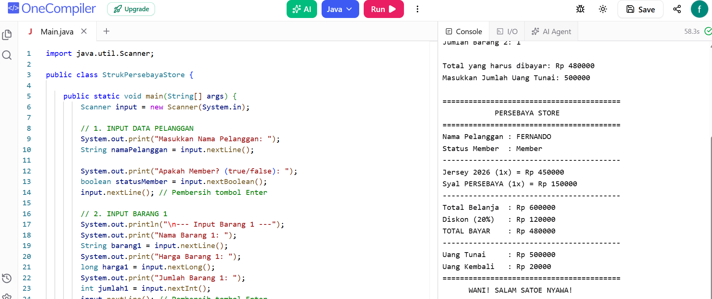

Latest Project


Saya adalah seorang siswa SMK KRIAN 1 SIDOARJO dari kelas X RPL 1. Saya punya cita-cita tinggi untuk menjadi seorang programmer hebat dan sangat bersemangat untuk mempelajari cara membuat website, aplikasi, hingga game. Saya fokus mengembangkan diri di bidang teknologi dan terus melatih kemampuan logika serta pemecahan masalah untuk menyiapkan diri jadi ahli di dunia pemrograman.
Saya adalah seorang siswa SMK KRIAN 1 SIDOARJO dari kelas X RPL 1. Saya punya cita-cita tinggi untuk menjadi seorang programmer hebat dan sangat bersemangat untuk mempelajari cara membuat website, aplikasi, hingga game. Saya fokus mengembangkan diri di bidang teknologi dan terus melatih kemampuan logika serta pemecahan masalah untuk menyiapkan diri jadi ahli di dunia pemrograman.
Read Moreproses pembuatan, pembangunan, dan pemeliharaan situs atau aplikasi web agar dapat diakses melalui internet secara cepat, aman, dan interaktif.
Read Moreproses pembuatan, pembangunan, dan pemeliharaan situs atau aplikasi web agar dapat diakses melalui internet secara cepat, aman, dan interaktif.
Read Morestrategi promosi atau pemasaran produk, jasa, maupun brand menggunakan saluran digital dan internet untuk menjangkau calon konsumen secara lebih luas, tepat sasaran, dan terukur.
Read More